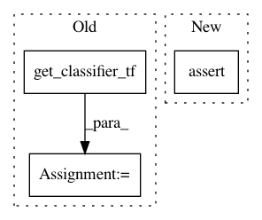

e06fa429553cd8a183f4fe57ea07e311b4f6ef4e,tests/classifiers/test_tensorflow.py,TestTensorFlowClassifier,test_set_learning,#TestTensorFlowClassifier#,240
Before Change
sess.close()
def test_set_learning(self):
classifier, sess = get_classifier_tf()
self.assertEqual(classifier._feed_dict, {})
classifier.set_learning_phase(False)
self.assertFalse(classifier._feed_dict[classifier._learning])
classifier.set_learning_phase(True)
After Change
self.classifier.set_learning_phase(False)
self.assertFalse(self.classifier._feed_dict[self.classifier._learning])
self.classifier.set_learning_phase(True)
self.assertTrue(self.classifier._feed_dict[self.classifier._learning])
self.assertTrue(self.classifier.learning_phase)
def test_repr(self):
In pattern: SUPERPATTERN
Frequency: 3
Non-data size: 3
Instances
Project Name: IBM/adversarial-robustness-toolbox
Commit Name: e06fa429553cd8a183f4fe57ea07e311b4f6ef4e
Time: 2020-01-15
Author: beat.buesser@ie.ibm.com
File Name: tests/classifiers/test_tensorflow.py
Class Name: TestTensorFlowClassifier
Method Name: test_set_learning
Project Name: IBM/adversarial-robustness-toolbox
Commit Name: e06fa429553cd8a183f4fe57ea07e311b4f6ef4e
Time: 2020-01-15
Author: beat.buesser@ie.ibm.com
File Name: tests/classifiers/test_tensorflow.py
Class Name: TestTensorFlowClassifier
Method Name: test_repr
Project Name: IBM/adversarial-robustness-toolbox
Commit Name: e06fa429553cd8a183f4fe57ea07e311b4f6ef4e
Time: 2020-01-15
Author: beat.buesser@ie.ibm.com
File Name: tests/classifiers/test_tensorflow.py
Class Name: TestTensorFlowClassifier
Method Name: test_predict